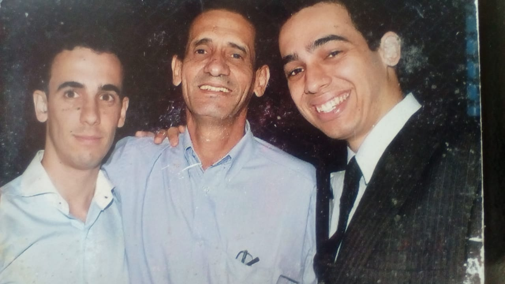

Breve história
Cat Stevens é um cantor-compositor e multi-instrumentalista britânico, nascido em 1948 e com uma longa carreira passando por folk, pop, rock e em parte de sua carreira, música Islâmica. Basicamente, é o meu cantor favorito por conta de uma de sua músicas, "Father and Son". Essa música foi escrita por ele em 1970 no álbum Tea for the Tillerman e regravada por ele mesmo em 2007. A música conta uma história um tanto quanto triste, de um pai que não entende o desejo de um filho de partir e viver uma nova vida, e o filho que não consegue se explicar, mas sabe que é hora de buscar seu próprio destino.
Gosto muito de vários estilos de música, mas quando falo de preferência, não consigo criar uma lista, pois essa do Cat Stevens não é comparável a nenhuma outra para mim.

A música e eu
É engraçado que a primeira vez que vou contar os detalhes dessa história seja em um "site".
Eu conheci essa música em 2012 e apesar de ela ter sido escrita em 1970 e eu nunca ter ouvido falar da música ou do cantor até então, ela soa para mim como muito mais do que uma música.
Toda vez que a ouço, sinto que estou conversando com meu pai e ao mesmo tempo em que a saudade aperta e não consigo conter a emoção, sinto uma enorme gratidão no peito, por tudo que meu pai me ensinou ao longo dos 23 anos em que ele esteve ao meu lado e ao mesmo tempo, lembro de onde vim e o que consegui alcançar, que aos olhos de outras pessoas, pode parecer pouco, mas para mim, é motivo de olhar para o céu e dizer ao meu pai que cheguei onde sonhamos juntos e agora vou buscar o meu caminho. Lembro de ser grato pela família linda que eu tenho, por ter um teto sobre nossas cabeças e por ter como lema na minha vida uma frase que meu pai sempre falava para mim e para os meus irmãos, que "com dedicação, podemos aprender qualquer coisa".
A única diferença da minha história para a música é que antes de ver que precisava seguir meus sonhos, consegui também me realizar pensando bem nas minhas decisões, encontrando A garota, me casando... enfim, ouvindo ao meu pai.
Meu pai nos deixou em setembro de 2012, perdendo a luta contra um câncer de pulmão que foi descoberto em estágio avançado e nos deu apenas 2 meses para tentar retribuir, o que não conseguimos nem de longe, o tanto que ele fez (e continua fazendo toda vez que lembro dele) por nós.
